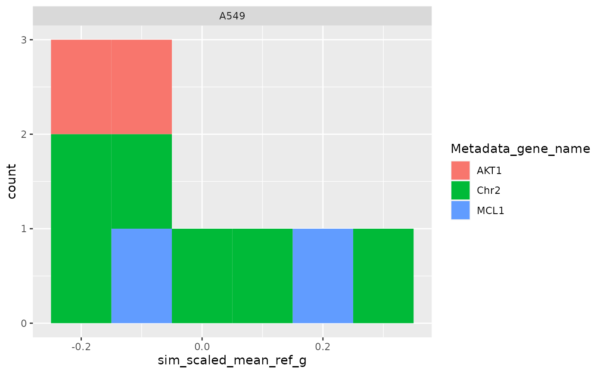

sim_metrics computes metrics.
sim_metrics(
collated_sim,
sim_type_background,
calculate_grouped = FALSE,
annotation_prefix = "Metadata_",
use_furrr = FALSE
)output of sim_collated, which is a data.frame
with some attributes.
character string specifying the background
distributions for computing scaled metrics. This must be one of the
strings "non_rep" or "ref".
optional boolean specifying whether to include grouped metrics.
optional character string specifying prefix for
annotation columns (e.g. "Metadata_" (default)).
boolean indicating whether to use the furrr library for parallel processing.
List of metrics.
suppressMessages(suppressWarnings(library(ggplot2)))
sim_df <- matric::sim_calculate(matric::cellhealth)
drop_group <-
data.frame(Metadata_gene_name = "EMPTY")
reference <-
data.frame(Metadata_gene_name = c("Chr2"))
all_same_cols_ref <-
c(
"Metadata_cell_line",
"Metadata_Plate"
)
all_same_cols_rep <-
c(
"Metadata_cell_line",
"Metadata_gene_name",
"Metadata_pert_name"
)
all_same_cols_rep_ref <-
c(
"Metadata_cell_line",
"Metadata_gene_name",
"Metadata_pert_name",
"Metadata_Plate"
)
any_different_cols_non_rep <-
c(
"Metadata_cell_line",
"Metadata_gene_name",
"Metadata_pert_name"
)
all_same_cols_non_rep <-
c(
"Metadata_cell_line",
"Metadata_Plate"
)
all_different_cols_non_rep <-
c("Metadata_gene_name")
all_same_cols_group <-
c(
"Metadata_cell_line",
"Metadata_gene_name"
)
any_different_cols_group <-
c(
"Metadata_cell_line",
"Metadata_gene_name",
"Metadata_pert_name"
)
annotation_cols <-
c(
"Metadata_cell_line",
"Metadata_gene_name",
"Metadata_pert_name"
)
collated_sim <-
matric::sim_collate(
sim_df,
reference,
all_same_cols_rep = all_same_cols_rep,
all_same_cols_rep_ref = all_same_cols_rep_ref,
all_same_cols_ref = all_same_cols_ref,
any_different_cols_non_rep = any_different_cols_non_rep,
all_same_cols_non_rep = all_same_cols_non_rep,
all_different_cols_non_rep = all_different_cols_non_rep,
any_different_cols_group = any_different_cols_group,
all_same_cols_group = all_same_cols_group,
annotation_cols = annotation_cols,
drop_group = drop_group
)
metrics <- matric::sim_metrics(collated_sim, "ref", calculate_grouped = TRUE)
ggplot(
metrics$level_1_0,
aes(sim_scaled_mean_ref_i, fill = Metadata_gene_name)
) +
geom_histogram(binwidth = .1) +
facet_wrap(~Metadata_cell_line)
ggplot(
metrics$level_1,
aes(sim_scaled_mean_ref_i_mean_i, fill = Metadata_gene_name)
) +
geom_histogram(binwidth = .1) +
facet_wrap(~Metadata_cell_line)
ggplot(
metrics$level_2_1,
aes(sim_scaled_mean_ref_g, fill = Metadata_gene_name)
) +
geom_histogram(binwidth = .1) +
facet_wrap(~Metadata_cell_line)
